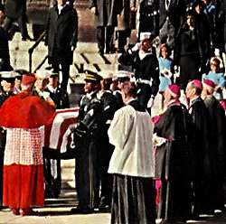

|
aThe Fifties Web - Your Retro 50s, 60s and 70s
Source
|
|
Bookmark This
Page Email this page to a friend |
Kennedy AssassinationNovember 25, 1963Page 1 2 Next>>> |
| Monday, November 25, 1963 Page One This was John F. Kennedy Jr.'s third birthday and the day began with his sister Caroline and nanny Maude Shaw singing "Happy Birthday" to him. .At 10:50 a.m. The Kennedy family assembled at the Capitol to be with John F. Kennedy on his final journey. The servicemen from the Army, Navy, Marines, Air Force and Coast Guard worried. The coffin was especially heavy and downhill is difficult. They practiced all night. As the President's body was borne down the steps the band played a slow version of "Hail to the Chief" and "the Navy Hymn." The cortege carried President Kennedy to the White House, where President and Mrs. Johnson, more family members, friends, Congressional leaders, Joint Chiefs and world diplomats and heads of state had assembled to escort the slain Kennedy to St. Matthews Cathedral for his funeral Mass. The mourners were to walk behind the cortege. |
|
The entire trip, from Capitol to White House, to St. Matthews Cathedral to Arlington would be six miles. An estimated one million people lined the route.
Above is one of the images indelibly impressed on the collective memory, the mourners walking the eight blocks from the White House to St. Matthews Cathedral. If the Kennedy family was as close as America gets to royalty, then indeed Jackie Kennedy presented a regal appearance. Her face etched in pain visible even behind the veil, her demeanor never waivered and her step never faltered. Among the world leaders in attendance were Britain's Prince Philip and Prime Minister Douglas-Home, France's President Charles de Gaulle, Greece's Queen Frederika, Japan's Crown Prince Akihito, Belgium's King Baudouin, Russia's Deputy Premier Mikoyan, Ethiopia's Emperor Haile Selassie, Ireland's President De Valera, Canada's Prime Minister Pearson, Germany's Chancellor Erhard, and the Philippine's President Macapagal. Martin Luther King, who would fall to an assassin's bullet in April of 1968 was in attendance. Over 90 national flags would go to half-staff in their native countries. The Panama Canal would briefly close. Athens policeman stopped traffic. This pageantry was a security nightmare. 4,000 armed men protected the route. It is a miracle that no incident occurred. |
|||||
|  Richard Cardinal Cushing blesses the coffin before services. |
Although Caroline and John-John had riden to the Cathedral in a
limousine, once at the steps they returned to their mother's care. The pontifical requiem mass was performed by Richard Cardinal Cushing, who had officiated at the marriage of John and Jackie Kennedy, spoken at his Inaugural, and christened the children. Per Mrs. Kennedy's request, it was a low mass. Joining dignitaries was the Kennedy family save for the ailing patriarch Joseph. Jackie Kennedy had asked that Secret Service Agent Clint Hill, the one who had climbed aboard that limousine in Dallas, sit directly behind her in the church. |
|
John F. Kennedy Jr. salutes his father's coffin |
Luigi Verna of Boston sang Ave Maria as he had at their wedding.
Philip Hannan, Auxillary Bishop of Washington, at the Kennedy's family request read Bible passages they had chosen and excerpts from the Inaugural Address. But the most poignant moment was yet to come. On the steps outside St. Matthews Cathedral, we saw Jackie Kennedy lean over and whisper to young John-John. Smart and crisp, John F. Kennedy Jr. saluted his father's departing coffin. |
|
| November 25 Page 1 2 Next>>> |
| Index | TV | Games | Pop History | Music | Fads Fashions Slang |
Movie Quotes | Dead People | Elvis | TV Westerns |
Copyright 2003. All Rights reserved. Candace Rich.